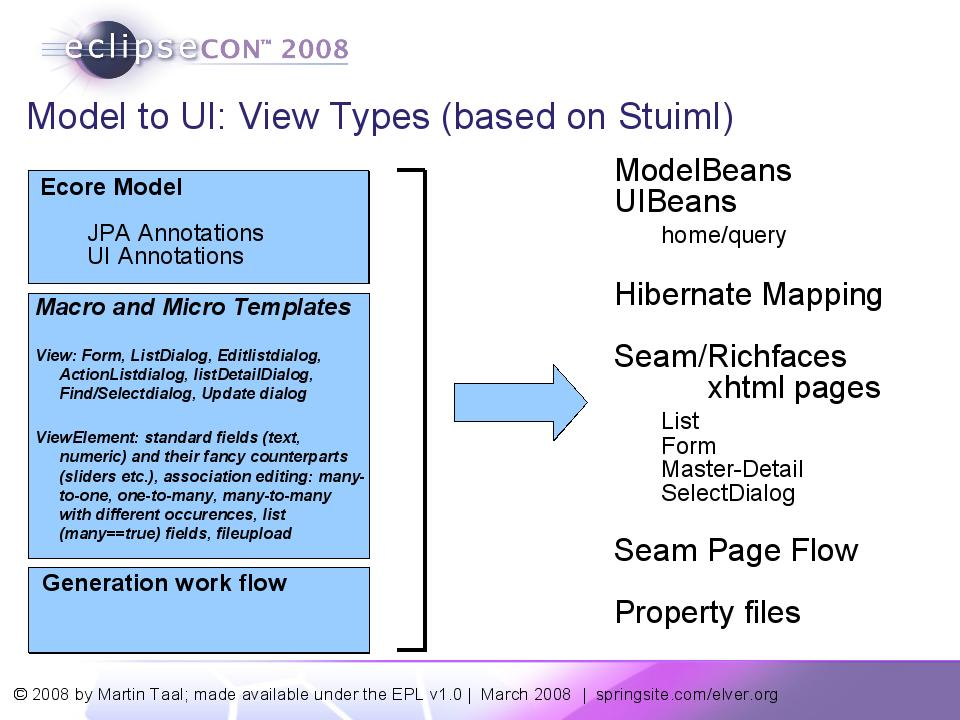

Model-driven Template-Powered Generation of Data-Oriented Web Apps
- Why?
- Base principles
- Overview
- UI Annocations
- StUIML
- Merging
- Current Version
- Seam/RichFaces/JSF
- Contact
The past month I have worked on a new open source project which has as main topic the generation of Web Apps on the basis of ecore models.
Why?
My drive to start this project is that there are many productivity gains possible when developing web applications. My experience is that developing web applications is a time-consuming and sometimes frustating experience. Especially if you take into account things like popup windows, layouting, exit warnings on forms, cursor handling, tab indexes, css stylesheets etc. I have watched the Seam and RichFaces forums over the past four months and again and again I see that developers are struggling with the same issues (open a panel, getting calendar to work, getting transactions right in Seam, understanding conversations, etc.).
Model driven development and code generation have been around for a while. The mdd approach and code generation in general have resulted in dramatic gains when developing core java code. However the model driven/code generation approach (and its toolset) has largely passed by the web application world (at least afaics).
My impression is that model driven development is often used/propagated by software architects with a strong uml/omg background. What often seems to be ignored is the fact that to actually generate a useful application you require a set of useful templates. Creating and maintaining templates is a time-consuming and expensive task which can only be done within larger projects.
This automatically means that for smaller web application development projects it is difficult to follow a mdd approach because of the lack of available templates.
So as I see it there is a need for a code/artifact generation solution which contains a large set of templates which support developers in generating web applications. The generated application can be used directly and extended or can be used as an example of how to implement specific patterns.
Base principles
Some basic principles which form the basis of my work in this area:
- Ecore models are the starting point: the main input of the generation logic are models Texpressed in ecore, enriched with jpa and ui annotations.
- Templates are the key: a user of a UI generation toolset should actually want to use the generated code without (major) changes. The generated code should look good and be logical. The resulting app should be a good-looking and function-rich application. This means that templates form the core of the solution. The power and the usability and the productivity gains all center around powerfull templates.
- Templates should be extendable/adaptable: it is clear that standard templates will not fullfill all requirements of a user. Therefore the toolset should support easy extendability and adaptability of templates. Templates should be small and easy-to-understand.
- Not for architects, but for developers: the model driven movement has been dominated by software architects and modeling enthousiastics. However, I think that there is a large potential mdd userbase out there of people who want to easily create a starting application to work from, or generate an application to copy common constructs from.
- Usability is in the detail: data oriented applications should support users in effectively and efficiently maintaining
information. There are a number of details which should be taken into account to support this. A random set
of examples:
- When a form opens the cursor should be present in the first field.
- Tab sequence should be logical
- Clicking on a field should select the complete value in the field so that it can be replaced without extra mouse clicks.
- The save button of a form should be disabled until something changes
- Sensible shortcusts on fields/buttons
- Pages should keep state, for example when returning to a list view after the edit view the search and filter criteria entered earlier by the user should still be present.
- A form should have an exit warning
- A non-mandatory listbox should have an empty value without label which is selected initially, a mandatory listbox should initially select an empty value with a label saying 'Please select a value'.
- ...
- Standard frameworks: the current version generates web apps for the Seam/RichFaces platform.
Overview
The illustration below shows the basic approach in generating web apps.

The starting point of the generation is one or more ecore models which have been enriched with jpa or ui annotations.
The templates can be divided in two main groups: view templates and element templates. View templates are responsible for generating a complete page (a xhtml page, a property sheet). Element templates are templates which take of generating the ui for a single feature or field.
Work flow: to create multiple output files for one set of inputs the system makes use of a simple workflow definition.
UI Annocations
This section contains an overview of a number of UI annotations which are currently used by the tools to generate more targeted ui's.
- Title/Description/Identifier: these annotations can contain EL expressions and describe how an entity should be visualized in lists and listboxes. The identifier is used to fill the field of the selection-pop-down field.
- Entity (expectedOccurences) and UICollection (expectedSize): the combination of these two annotations directs which type of editing control should be used for many-to-one, one-to-many and many-to-many associations. For example, a many-to-one to an entity with a large number of occurences would require an ajax select view with a separate select view, while a small number of occurences can be visualized with a listbox.
- Searchable: flags a feature as being searchable using filter and search fields in a grid.
- DateTime (editformat, displayformat): there is often a difference between the way a data is edited and visualized.
- Text (casing, number of lines, alignment, nolines, secret, displaysize, pattern): these annotations determine if a textbox or a single text field should be displayed.
- File: flag a feature as being a file field with the file upload location
- JPA Annotations: in addition the available jpa annotations are used as extra information to determine what type of ui dialog is the most appropriate.
StUIML
The template model is based on the standard ui modeling language, for more information visit the StUIML website.
Merging
An important topic is merging of newly generated files with existing files. The current version supports merging of java and property files. Merging of xml files is a topic which will be covered in the future.
Current Version
The current version is not available yet for download or use. Subversion is located here: https://elvertechnology.dev.java.net/svn/elvertechnology/. I expect to release a first version in the June timeframe.
Seam/RichFaces/JSF
The current version generates web apps for the Seam/RichFaces platform. Seam brings a lot of advantages related to conversations and support for jsf/validation, etc.
Contact
Drop me an email if you are interested in this topic. I can be reached at the following email address: mtaal_at_elver.org